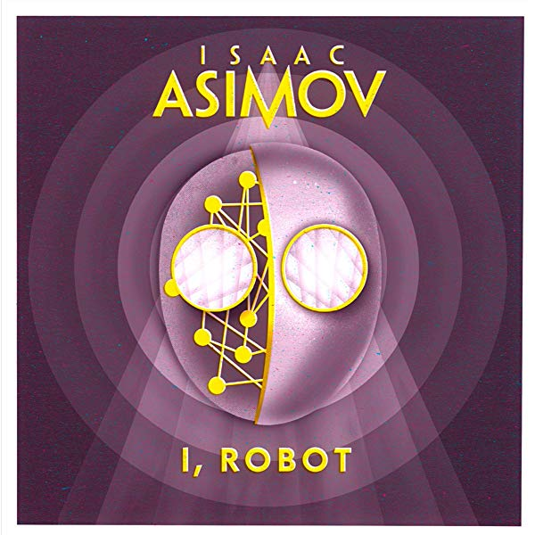

I, Robot (1950)
Synopsis
The three laws of Robotics: 1) A robot may not injure a human being or, through inaction, allow a human being to come to harm 2) A robot must obey orders givein to it by human beings except where such orders would conflict with the First Law. 3) A robot must protect its own existence as long as such protection does not conflict with the First or Second Law. With this, Asimov changed our perception of robots forever when he formulated the laws governing their behavior. In I, Robot, Asimov chronicles the development of the robot through a series of interlinked stories: from its primitive origins in the present to its ultimate perfection in the not-so-distant future--a future in which humanity itself may be rendered obsolete. Here are stories of robots gone mad, of mind-read robots, and robots with a sense of humor. Of robot politicians, and robots who secretly run the world--all told with the dramatic blend of science fact & science fiction that became Asmiov's trademark.
Download PDF